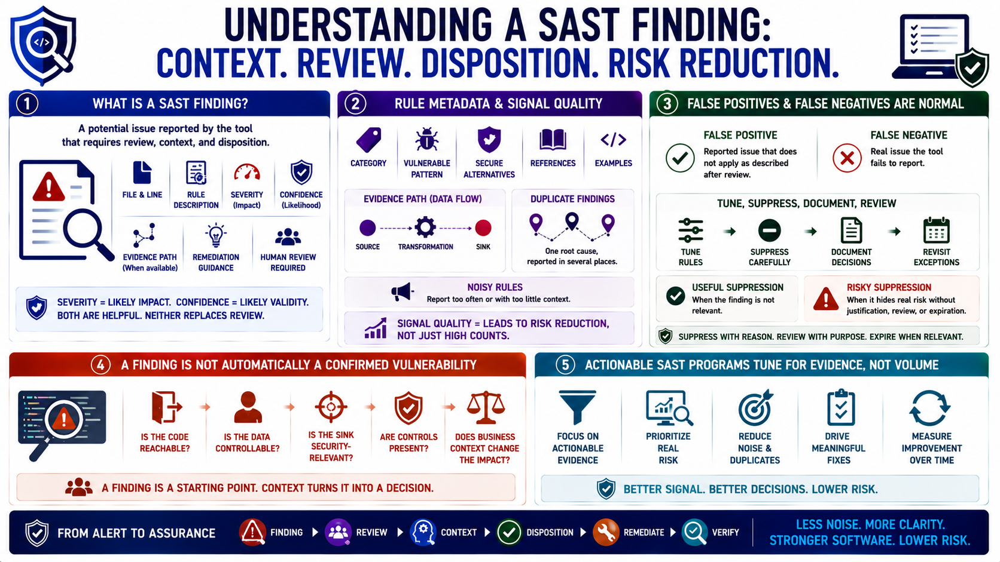

Findings, Rules, and Signal Quality
Connecting to LMS... Progress: in progress

Narration
A SAST finding is a potential issue reported by the tool that requires review, context, and disposition. Good findings include the affected file and line, a description of the rule, severity, confidence, an evidence path when available, and remediation guidance. Severity estimates likely impact. Confidence estimates how likely the report is to be valid. Both are useful, but neither replaces human review.
Rule metadata helps reviewers understand what the tool thinks it found. A rule may describe the category, the vulnerable pattern, secure alternatives, references, and examples. Evidence paths can show how data moves through code. Duplicate findings may represent one root cause reported in several places. Noisy rules may report too often or with too little context. Signal quality is about whether the output leads to risk reduction, not whether the dashboard has a high count.
False positives and false negatives are normal. A false positive is a reported issue that does not apply as described after review. A false negative is a real issue the tool fails to report. Teams should tune rules, suppress carefully, document decisions, and revisit exceptions. Suppression can be useful when a finding is not relevant, but it is risky when it hides real risk without justification, review, or expiration.
A tool finding is not automatically a confirmed vulnerability. It is a starting point for review. The reviewer asks whether the code is reachable, whether the data is controllable, whether the sink is security-relevant, whether controls are present, and whether the business context increases or reduces impact. Useful SAST programs tune for actionable evidence rather than maximum alert volume.